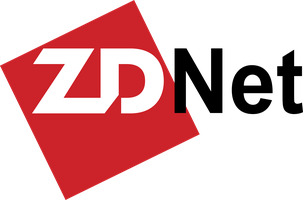
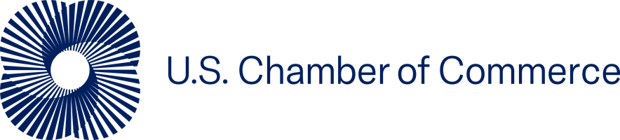
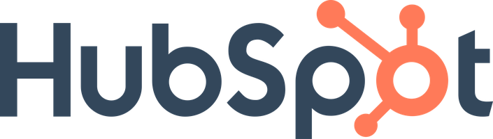

A fixed-scope, fixed-fee program built on three pillars: executive training, department-by-department rollout with matched consultants, and the context architecture that makes adoption stick. It ends with your people demoing real automations they built.
Your exec team trains alongside the org, with a consultant who has worked on exec teams, in the language of budgets and board updates, not prompt theory. We used to make this optional. We don't anymore: adoption only sticks when the workforce sees leadership using it first.
Each department pairs with a consultant who actually did that job: finance with a finance veteran, sales with a sales veteran, ops with an ops veteran. They speak the operators' language and know where Claude breaks in practice, not in theory.
Company, department, and individual-level knowledge wired into Claude, built as its own parallel workstream so we never burn a training session on troubleshooting someone's folder sync. This is Company Brain →
Everyone gets to the same baseline: procurement and settings, then Claude 101 and 102. Nobody starts department work behind.
The context substrate goes in, then weekly tool mastery: Excel, documents and decks, artifacts, skills. Your people stop chatting with AI and start working with it.
Show, then ask. Curated examples from past clients in your industry, walked through end to end, so your team sees the bar before they're asked to clear it.
Pair-programming with the matched consultant. By week 16 your people ship real automations they own, demoed at a final readout with ROI. An invite-only advanced group runs in parallel for the top users: Claude Code, MCP, agentic workflows.
Real workforce adoption isn't free, and we put this in writing before kickoff. Your people commit 4 to 6 hours a month of workshop time, pair-programming, and homework on their own files. The first three weeks feel like learning a new operating system. And around weeks 5 through 8, throughput dips, because they're doing the same work two ways: once their way, once with Claude. Plan for it.
They come out the other side feeling like they have superpowers. That's not a metaphor we use lightly. It's what demo day exists to prove.
The program scales from 2 to 3 departments for smaller companies up to 5 departments with an expanded champions network for larger ones. Above ~300 employees we scope custom. Every tier includes the pre-engagement diagnostic, the exec cohort, matched consultants, full context architecture, pair-programmed builds, and an exit handoff. We'll give you a real number on the first call.
The Deployment Program has a finish line: 16 weeks, your company live on Claude, your people shipping their own automations. It's the right fit when you want a defined transformation with a defined end, and your team is self-sufficient at exit.
Your AI Team is the ongoing version: your AI lead owning the strategy, a dedicated engineer shipping every two weeks, training that never goes stale. Most deployment clients graduate into it, because the companies pulling ahead never stop building.
One call. We'll tell you exactly what AI can and can't do for your business, and what it would take. If it's not a fit, we'll say so.
Book a discovery call
As covered in ZDNET, Sep 2025.
As covered by the U.S. Chamber of Commerce, Jul 2025.
As covered by HubSpot, Oct 2025.